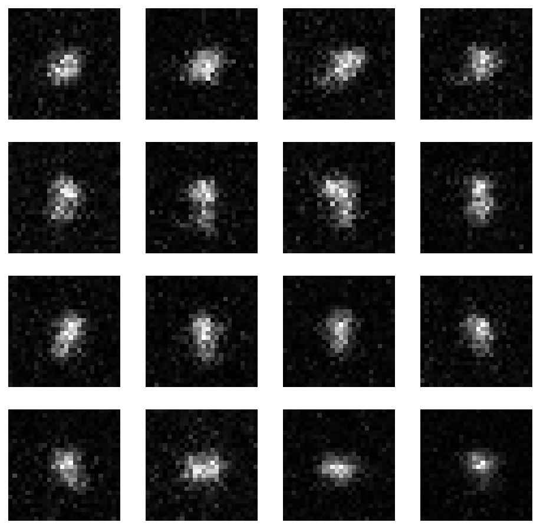
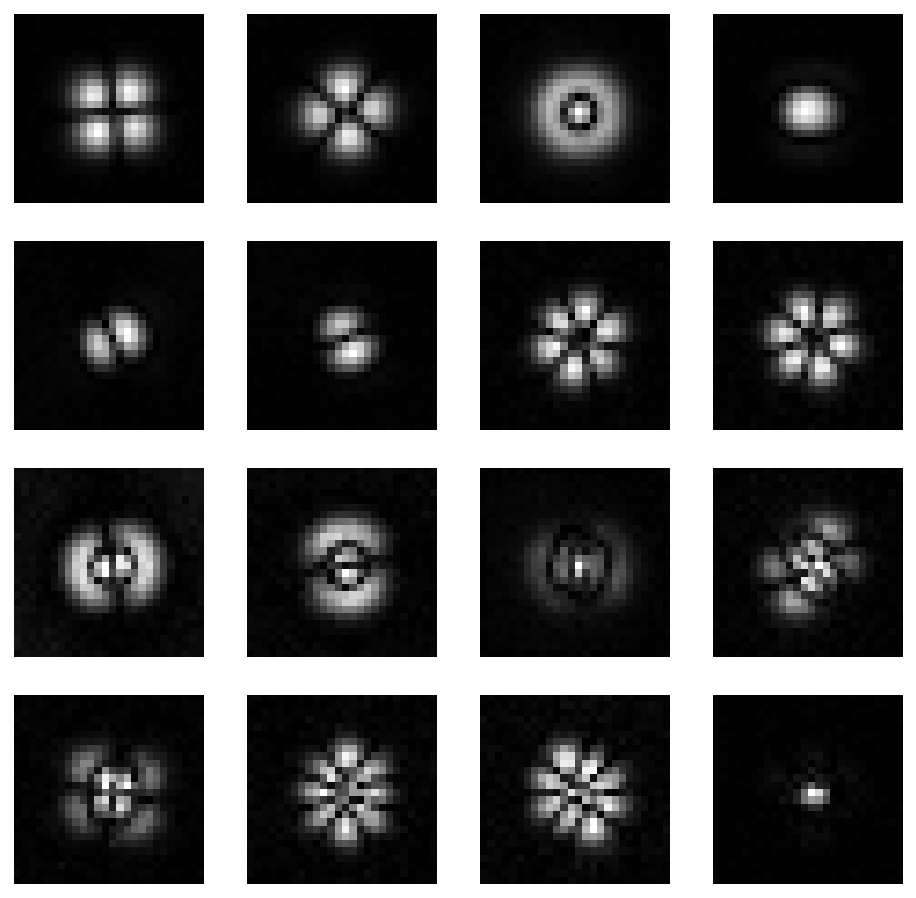
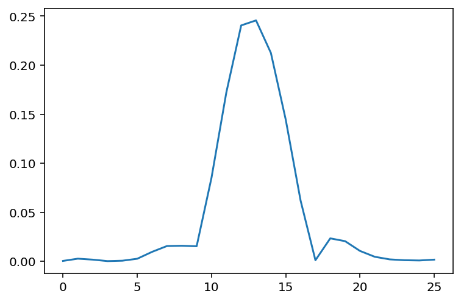
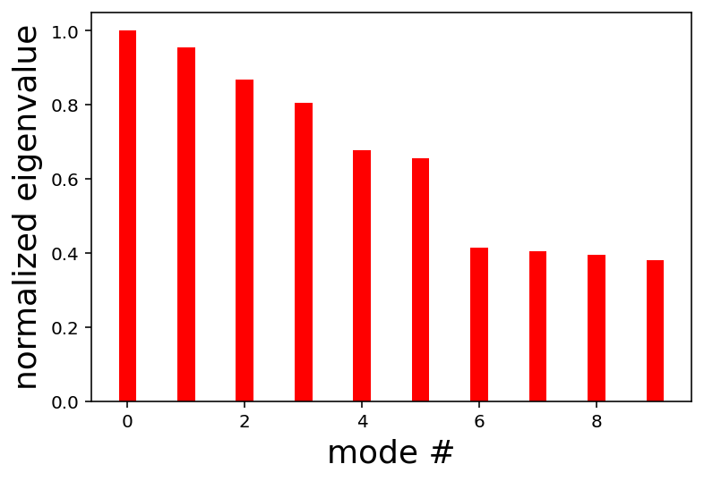
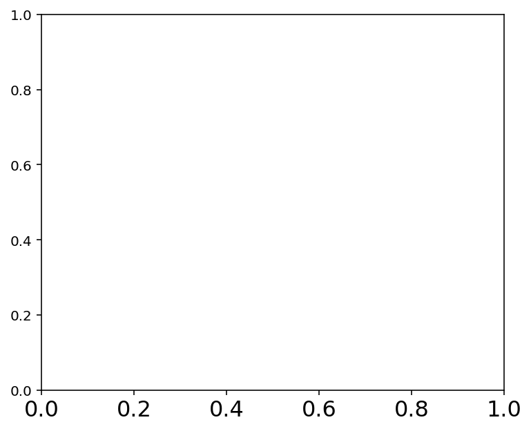
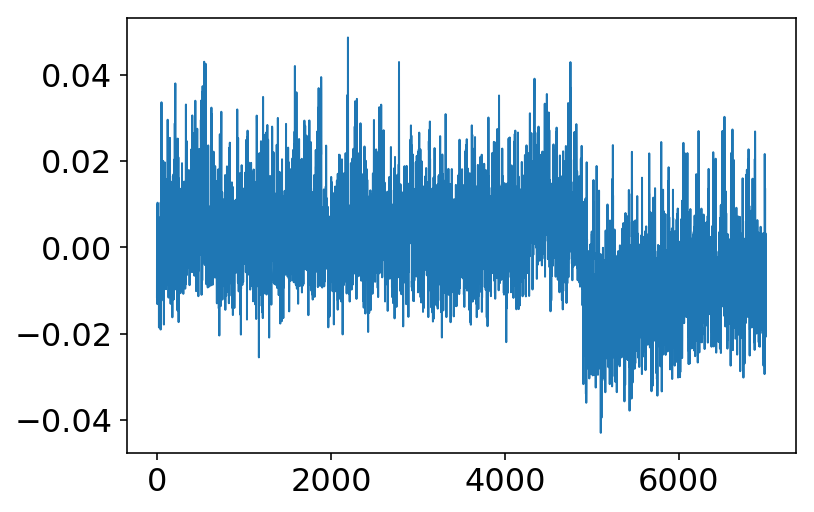
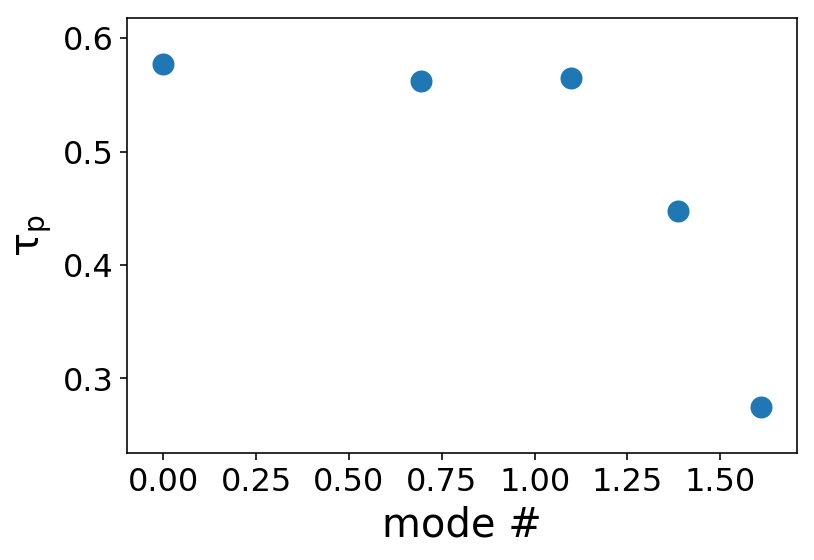

This page was generated from notebooks/L4/Measurement 25 - 29136 images/PCA Image DNA fast.ipynb.

Principle Component Analysis of DNA conformation fluctuations¶
The data analysis below splits the fluctuations detected in a sequence of images of a DNA (shifted by the COM) into the principle components of fluctuations. The 16 strongest PC are used to project the dynamics of the DNA.
The analysis is for trapped DNA.
[1]:
import glob
from PIL import Image
from numpy import *
import matplotlib.gridspec as gridspec
import pickle
import numpy
import pylab
import matplotlib.pyplot as plt
%matplotlib inline
%config InlineBackend.figure_format = 'retina'
This is the PCA function. It calculates the covariance matrix of the image series and obtains its eigenvectors and eigenvalues.¶
[2]:
def pca(X):
#get dimensions
print('starting PCA...')
num_data,dim = X.shape
print(num_data, dim)
#center data
mean_X = X.mean(axis=0)
for i in range(num_data):
X[i] -= mean_X
if dim>2000:
print('PCA - compact trick used')
M = dot(X,X.T) #covariance matrix
e,EV = linalg.eigh(M) #eigenvalues and eigenvectors
tmp = dot(X.T,EV).T #this is the compact trick
V = tmp[::-1] #reverse since last eigenvectors are the ones we want
S = sqrt(abs(e))[::-1] #reverse since eigenvalues are in increasing order
else:
print('PCA - SVD used')
U,S,V = linalg.svd(X)
V = V[:num_data] #only makes sense to return the first num_data
#return the projection matrix, the variance and the mean
return V,S,mean_X
load the data¶
[3]:
file = open("parameters.txt",'rb')
parameters = pickle.load(file)
file.close()
print(parameters)
file = open("series_combined_manually_adapted_afterwards.txt",'rb')
series = pickle.load(file)
file.close()
# just take 10000 frames not all of them
imnbr=series.shape[0]
m=series.shape[1]
n=series.shape[2]
---------------------------------------------------------------------------
FileNotFoundError Traceback (most recent call last)
<ipython-input-3-37891dc99f6e> in <module>
----> 1 file = open("parameters.txt",'rb')
2 parameters = pickle.load(file)
3 file.close()
4 print(parameters)
5
FileNotFoundError: [Errno 2] No such file or directory: 'parameters.txt'
Sort the data and perform PCA¶
[9]:
#create matrix to store all flattened images
#immatrix = numpy.array([numpy.array(Image.open(imlist[i]).convert('L')).flatten() for i in range(imnbr)],'f')
#immatrix = numpy.array([numpy.array(data[0:m,i*m:i*m+m]).flatten() for i in range(imnbr)],'f')
delta=10000
for i in range(imnbr):
back=(numpy.mean(series[i][:,0])+numpy.mean(series[i][:,25])+numpy.mean(series[i][25,:])+numpy.mean(series[i][0,:]))/4
series[i]=series[i]-back
imnbr=7000
immatrix = [series[i+delta].flatten() for i in range(imnbr)]
V,S,immean = pca(numpy.array(immatrix))
immean = immean.reshape(m,n)
starting PCA...
7000 676
PCA - SVD used
Show some sample images¶
[20]:
pylab.figure(figsize=(8,8))
counter=1000
#for i in range(0,5):
for j in range(1,17):
pylab.subplot(4,4,j)
pylab.imshow(numpy.abs(immatrix[counter].reshape(m,n)),cmap=pylab.get_cmap('gray'))
pylab.axis('off')
counter+=1

Plot the first 16 eigenvectors¶
[11]:
pylab.figure(figsize=(8,8))
counter=0
#for i in range(0,5):
for j in range(1,17):
pylab.subplot(4,4,j)
pylab.imshow(numpy.abs(V[counter].reshape(m,n)/S[counter]),cmap=pylab.get_cmap('gray'))
pylab.axis('off')
counter+=1

[14]:
for nn in range(16):
xm=12.5
ym=12.5
s=0
#nn=0
vec=V[nn].reshape(m,n)
for x in range(0,26):
for y in range(0,26):
d=sqrt((x-xm)**2+(y-ym)**2)
s=s+vec[x,y]*d*vec[x,y]
print(s)
4.109109787732958
4.020439697249832
4.165193110514435
1.8876334348116786
2.761074848379275
2.7811864648815434
4.292185645533742
4.3266558283976835
4.454159835789798
4.474934146279136
3.784978685430305
3.9211597392281177
3.809472408891284
4.4294033538958475
4.390795426389161
1.5870071608896226
[15]:
image=numpy.abs(V[3].reshape(m,n))
plt.plot(image[:,numpy.int(m/2)])
[15]:
[<matplotlib.lines.Line2D at 0x7f94977b84f0>]

plot the normalized contribution of the eigenvalues¶
[16]:
pylab.bar(range(0,numpy.size(S[:10])),(S[0:10])/S[0],0.3,color='r')
pylab.xlabel("mode #",fontsize=18)
pylab.ylabel("normalized eigenvalue",fontsize=18)
pylab.rc('xtick',labelsize=16)

calculate the dynamics of the individual modes¶
[17]:
amp_a=[]
b=[]
im1=[]
img=numpy.zeros((m,m))
counter=0
mean=0
fig=plt.figure(figsize=(6,5))
ax=fig.gca()
for j in range(0,imnbr):
im1=numpy.array(series[j,0:m,0:m])
counter=0
b=[]
for k in range(0,10):
amp_a=[]
for j in range(0,imnbr):
im1=numpy.array(immatrix[j][:])#series[j,0:m,0:m])
amp1=numpy.dot(im1.reshape(m*n),V[k]/S[k])
amp_a.append(amp1)
# pylab.subplot(5,5,k+1 )
mean1=numpy.mean(amp_a)
amp_a=amp_a-mean1
corr=numpy.correlate(amp_a,amp_a,mode='full')
corrh=corr[corr.size/2:]
b.append(corrh[1]/(corrh[1]-corrh[4]))
corr /= corr[corr.argmax()]
plt.axis((0,20,0.001,1))
plt.semilogy(range(0,20),corrh[0:20],'.-')
ax.annotate(str(k),xy=(8,corrh[8]))
# pylab.axis('off')
plt.xlabel('time [steps]')
plt.ylabel('amplitude [a.u.]')
plt.tight_layout()
plt.show()
---------------------------------------------------------------------------
TypeError Traceback (most recent call last)
<ipython-input-17-a0f3c915c36d> in <module>
29 corr=numpy.correlate(amp_a,amp_a,mode='full')
30
---> 31 corrh=corr[corr.size/2:]
32 b.append(corrh[1]/(corrh[1]-corrh[4]))
33 corr /= corr[corr.argmax()]
TypeError: slice indices must be integers or None or have an __index__ method

[68]:
plt.plot(amp_a)
[68]:
[<matplotlib.lines.Line2D at 0x118e47ac8>]

[41]:
pylab.scatter(numpy.log(range(1,numpy.size(b))),numpy.log(b[1:numpy.size(b)]))
pylab.ylabel(r'$\rm \tau_{p}$',fontsize=20)
pylab.xlabel('mode #',fontsize=20)
pylab.rc('xtick',labelsize=12)
pylab.rc('ytick',labelsize=16)

[ ]: